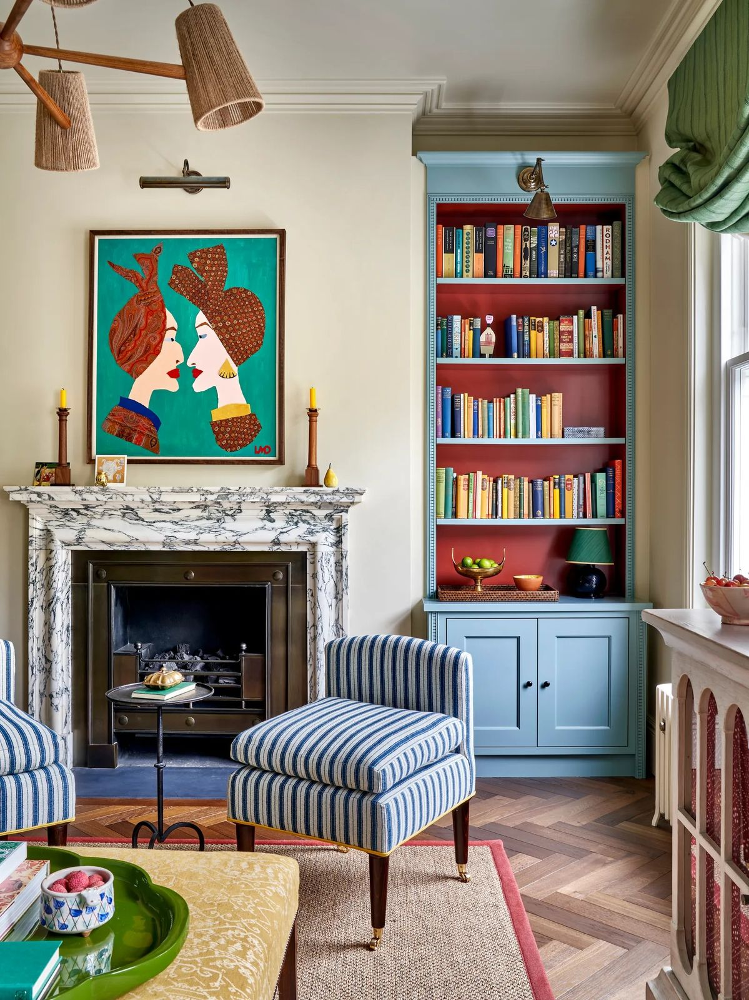
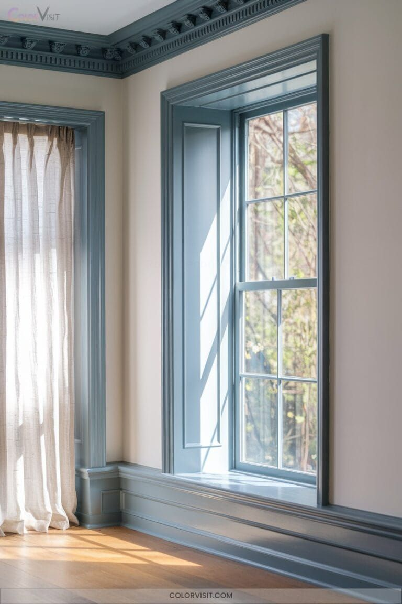
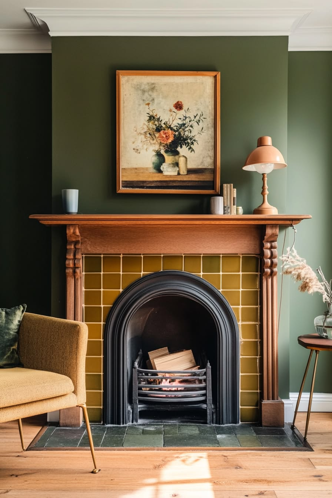
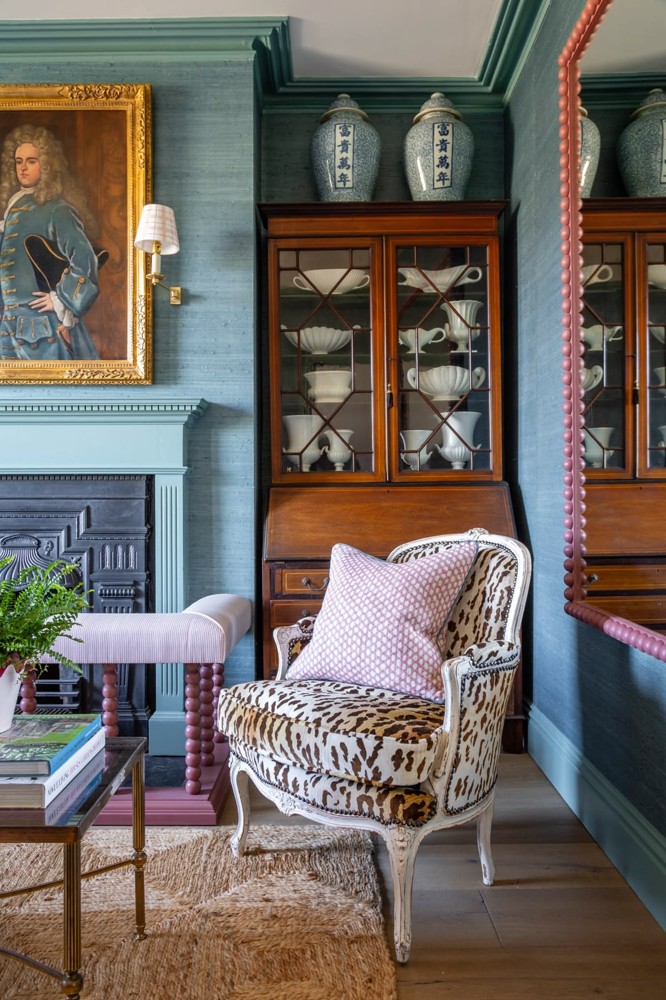

London · Cultural Fusion Homes
From Notting Hill Carnival to Southall Broadway, from Brick Lane to the Soho rickshaw — London's streets hold one of the richest colour traditions on earth. Patina & Polish brings that colour inside, through a cultural fusion framework applied to the period homes of London.

These are not tourist landmarks. They are the specific places in London where cultural colour traditions are most visible, most vivid, and most expressive — and where the argument for bringing those colours inside is most obvious.
The most colourful event in Europe. Every August, the streets of W11 carry the full Caribbean palette — from deep indigo to tropical green, all against cream Victorian stucco.
London's most concentrated South Asian high street. Sari shops in magenta and gold, sweet shops in deep jewel green, spice stalls in saffron and maroon — wall to wall, every day.
Bangladeshi restaurant frontages in curry orange and turquoise, street art murals, spice market stalls in deep red and warm brick. East London at its most visually dense.
The electric cycle rickshaws of Shaftesbury Avenue and Soho — painted in vivid custom colour combinations of teal, magenta, gold and night blue. London's most unexpected rolling colour gallery.
Caribbean and West African market tradition — primary red, gold, and green with Caribbean aqua. Bold, joyful, and built on generations of community. The most primary-coloured market in London.
Terracotta cups, saffron tea, cardamom green, dark chai. The roadside chai stall is found from Whitechapel to Wembley — a specific, ancient, and completely distinct colour story in five shades.
These are not coincidences. They are the visual evidence of a shared world. Each colour appears in multiple places across London, carrying a different name in each tradition — but unmistakably the same colour, everywhere, always.
Saffron awning, carnival gold, chai tea, spice yellow, jeweller's window, rickshaw panel. Six names. One colour. The most universal in London's cultural landscape.
Carnival dress, sari fabric, Soho rickshaw paintwork. Three traditions, one jubilant London pink. The most joyful colour on any street in the city.
Tropical Carnival, Southall sweet shop, Rasta Brixton, cardamom chai. The green of the natural world — tropical, agricultural, ceremonial — claimed across Caribbean, South Asian and West African traditions alike.
Brick Lane restaurant sign, Soho rickshaw panel, Brixton Caribbean aqua. The colour of water, distance, and arrival. Bangladeshi tile, West Indian market, the tropics carried through a London street.
Brick Lane chilli and curry, Southall maroon and spice terracotta, Brixton Rasta red, chai wala cup. The original pigment — clay, earth, spice, and solidarity. The oldest colour in London's cultural streets.
These five threads are the cultural fusion palette. Not because a decorator chose them — because London's streets chose them independently, across centuries and cultures, through shared relationships with the natural world. When you bring them inside, you are not importing something foreign. You are completing what the street already started.
Choose one thread or all five. The depth you choose determines how far you go. These are three real room schemes built from the threads above.
London's period homes carry their own architectural identity — the cornice, the ceiling rose, the cast iron fireplace, the encaustic hallway tile, the deep sash window reveal, the picture rail at two metres. The three depths determine the relationship between this architectural character and the cultural palette. At every depth, both are present. What changes is who leads.

The Teal Thread enters through the architecture — not the walls. Every surface that frames this room carries the same deliberate blue-grey: the elaborate decorative cornice running along the ceiling, the window surround and architrave, the window frame itself, and the deep baseboard along the floor. The cream walls between them are completely untouched — smooth, unbroken, the full 60% canvas entirely preserved. This is what the Whisper means: one thread, on the structural surfaces of the building, leaving the walls as the foundation. The choice of the River Mist position within the Teal Thread family is deliberate — restrained rather than vivid, the colour at the softer end of its range, letting the period architectural detail carry it. Afternoon light through the sash window falls across the parquet floor and catches the blue-grey of the frame. The room is not decorated. It is defined.
One cultural thread at the front door. Everything else in period neutrals. From the street, a single deliberate colour announces the identity of the home — quietly and precisely.
The exterior expression is developed during the site visit — the street, the brick, the neighbours, and the light all inform the final recommendation.

The white cornice marks the boundary at the top of every wall — period detail preserved and legible above, the cultural palette owning the space below it. The Green Thread runs throughout in a deep, settled olive: confident but not overwhelming, the room feeling lived-in rather than decorated. The Victorian wooden fireplace surround sits in its natural mahogany — celebrated as period architecture, not painted over. The Gold Thread enters through the mustard saffron tile surrounding the cast iron grate, warm and specific, picked up in the armchair beside it. The cast iron arch in its original black anchors everything beneath the mantle. A terracotta lamp adds a quiet third voice — the Red-Earth Thread barely spoken. Two threads in clear conversation, a third present but still. The architecture is the frame. The palette moves within it.
Two threads at the threshold. The door and the window frames carry different cultural threads — the conversation begins before the door opens. The brick stays as found. The ironwork stays in Off-Black.
The exterior expression is developed during the site visit — the street, the brick, the neighbours, and the light all inform the final recommendation.

The Teal Thread owns every surface. The walls carry it in a rich, settled duck-egg blue-grey. The elaborate cornice has not disappeared — it has joined the palette, absorbed into the same teal so that wall and ceiling meet without a boundary. The fireplace mantle carries a softer teal, the cast iron insert remaining in its original dark state as the anchor beneath. The Magenta Thread arrives in the pink bobbin-legged stool at the hearth, in the geometric cushion on the French armchair, and in the spool-turned frame glimpsed at the right edge. The Gold Thread speaks through the brass wall sconce and the ornate gilded frame of the period portrait hanging to the left of the chimney breast. The mahogany breakfront cabinet carries Chinese porcelain at its crown. The leopard-print armchair and the woven jute rug ground the room beneath the palette. Cultural objects and period architecture complete the same story — and neither competes with the other. The house knows exactly who lives in it.
The whole façade makes the statement. Door in a bold cultural thread. Window frames in a contrasting thread. Ironwork in a deep cultural shade rather than neutral black. The house announces its identity to the street — and every neighbour who walks past it is a future enquiry.
The exterior expression is developed during the site visit — the street, the brick, the neighbours, and the light all inform the final recommendation.
A cultural fusion scheme is not just colour on walls. The five threads distribute across three layers — canvas, wallpaper and architectural surfaces, and painted thread accents — and the depth chosen determines which threads go where and at what proportion.
Canvas · 60% · Wallpaper + Architectural surfaces · 30% · Cultural thread on architecture · 10–30%
The Cultural Fusion Brief specifies all three layers for your specific home — the canvas neutral, the thread positions in paint, and the textile direction for each room.
There are three steps, each leading naturally to the next. Start with a free video call — show Akram your home, hear an initial impression of what is possible, and build the confidence to take the next step. Then choose the site visit that suits you. The difference between the two paid options is what you take home at the end.
A note on scope: Patina & Polish is a specialist finishing decorator — not an interior designer. We work on surfaces: colour direction, paint, natural finishes, and preparation quality. We do not source furniture, specify fixtures, or carry out spatial redesign. The Cultural Fusion Brief from the site visit provides the direction; detailed paint specification develops naturally through the decoration work itself.
About
Patina & Polish was established in East London after twenty years of specialist finishing work across some of Dubai's most demanding residential and hospitality projects. Working at that level — with clients of every cultural background, exacting preparation standards, and an aesthetic shaped by one of the world's most culturally diverse cities — built both the technical precision and the cultural sensitivity that this work genuinely requires.
We are building our East London portfolio now, and we are honest about that. What does not change is the quality of the finish and the depth of thinking behind every scheme.
The cultural fusion concept did not come from a book. It came from twenty years of working with the world's communities, and from a genuine love of the streets and the people of East London.
Start a conversation"70% of a lasting finish happens before a brush touches the wall. This is what separates a specialist from a contractor."
Add a LinkedIn recommendation here — copy the text directly from your LinkedIn recommendations.
Add a second LinkedIn recommendation here.
Twenty years of finishing work across residential and hospitality projects in London and Dubai. The preparation discipline, the natural finish application, the attention to period detail — these are transferable. Below is a selection of previous projects. East London before and after photographs will be added as the portfolio here grows.
These photographs show finished surfaces from residential projects in Dubai and London — limewash, clay paint, mineral silicate, and specialist paint application on plaster and masonry. The location is different. The preparation standard, the finish quality, and the attention to surface are the same skills now being applied to the period homes of E10, E11 and E17.
East London before and after photographs will be added as projects complete. If you would like to be among the first East London clients, get in touch now.
Tell us about your property, your postcode, and what you are hoping to create. Every project starts with a free 30-minute discovery call.
Building the portfolio now. If you are in E10, E11 or E17 and interested in the Cultural Palette Report, we are offering an introductory rate while we grow our East London project list. Get in touch and let's talk.
Akram responds to all enquiries within 24 hours · He will suggest dates for the site visit by email
There are no wrong questions — if you are not sure what you want, that is exactly what the visit is for